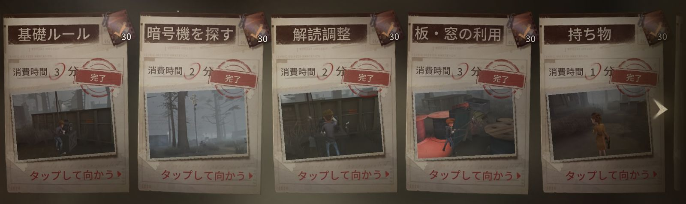

🎮 初心者が中級者になるための完全ガイド
初心者から中級者になるための、確実なステップを詳しく解説！
効率的な上達方法と実践的なテクニックを身につけよう
1暗黙のルール・基本マナーを完全マスター
Identity Vには明文化されていないが、プレイヤー間で共有されている重要なルールがあります。これらを理解することで、チームプレイがスムーズになり、上級者からも信頼されるプレイヤーになれます。
🔧 暗号機の基本ルール
- 暗号機の回し方：効率的な順序で解読し、ハンターに見つからないよう注意深く位置取りする
- 引き継ぎのタイミング：チェイス中の仲間が暗号機から離れたら、すぐに別の人が引き継ぐ
- 進行度の共有：暗号機の進行状況をチームメンバーに適切に伝える
⚠️ 危機一髪中の重要ルール
- 危機一髪状態の味方が回している暗号機には絶対に近づかない
- 危機一髪中は解読に集中し、暗号機解読は他の仲間に任せる
- ハンターとの距離を保ち、無理な救助は避ける
💡 プロからのアドバイス
暗黙のルールを守ることで、チーム全体の勝率が大幅に向上します。最初は覚えることが多く感じますが、実践を重ねることで自然に身についていきます。
2人格・特質システムを完全理解
人格と特質の組み合わせは戦略の核心です。各キャラクターに最適な構成を理解し、状況に応じて使い分けることで、プレイの幅が大きく広がります。
🛡️ サバイバー人格（2必須）
- 中治り：治療速度向上、チーム支援の要
- 危機一髪：ロケットチェア脱出後の生存率向上
- 膝蓋腱反射：板・窓越え速度向上
- フライホイール：少しの間ダッシュし無敵状態
⚔️ ハンター人格（2必須）
- 閉鎖空間：少しの時間窓を封鎖
- 傲慢：存在感獲得
- 裏向きカード：一回だけ特質を変更
- 引き留める：通電後、2倍のダメージ量
🎯 特質システム詳細解説
神出鬼没
サバイバーダウンを大幅に向上させる重要な特質
瞬間移動
距離を一気に詰めることができる攻撃的特質
移形
サバイバーとの距離を調整して詰めることのできる特質
巡視者
巡視者を放ち噛みつくとサバイバーを足止めできる特質
💡 人格構成のコツ
キャラクターごとに最適な人格構成が異なります。メインで使うキャラクターの特性を理解し、それに合わせた人格を組むことが重要です。上級者の構成を参考にしながら、自分のプレイスタイルに合わせて調整しましょう。
3全キャラクター能力・相性を徹底研究
Identity Vには多数のサバイバーとハンターが存在し、それぞれ独特の能力を持っています。相手の能力を知ることで、効果的な対策を立てることができます。
👥 サバイバー能力研究
医師（エミリー・ダイアー）
治療特化キャラ。チーム支援能力が高く、初心者にもおすすめ
弁護士（フレディ・ライリー）
マップアイテム所持で戦略性が高い。上級者向けキャラ
泥棒（クリーチャー・ピアソン）
懐中電灯でハンター妨害が可能。テクニカルなプレイが要求される
庭師（エマ・ウッズ）
ロケットチェア破壊能力で仲間を救う。チームプレイの要
👹 ハンター能力研究
道化師（ジョーカー）
ロケット攻撃で中距離制圧が可能。初心者ハンターにおすすめ
リッパー（ジャック）
霧と瞬間移動で高い機動力を誇る。上級者向け
ビリヤードプレイヤー
球を使って移動、救助狩りなんでもできる！
フラバルー
3色の色を付与するごとに一ダメージ
💡 相性研究の重要性
各キャラクターには得意・不得意な相手が存在します。例えば、機械技師は暗号機解読が得意ですが、ハンターとの直接戦闘は苦手です。相手キャラクターを見て戦略を変えることが勝利への鍵となります。
4全マップ攻略・ポジション完全マスター
マップ知識は生死を分ける重要な要素です。各マップの特徴を理解し、最適なルートと戦術を身につけることで、大幅な実力向上が期待できます。
🗺️ 主要マップ攻略
軍需工場
工場内の機械を活用した立ち回りが重要
聖心病院
複雑な構造を利用した逃走ルートの確保
赤の教会
一番覚えやすいマップ
湖景村
水辺と建物を使い分けた戦略
🏃♂️ ポジション戦略
- 強ポジション：板や窓が多く、長時間チェイスが可能なエリア
- 弱ポジション：逃走ルートが限定的で、早めの離脱が必要なエリア
- 中継ポジション：強ポジションへの移動中継点として活用
- 暗号機ポジション：解読に集中できる安全なエリア
💡 マップ攻略のコツ
まずは一つのマップを徹底的に覚えることから始めましょう。板の位置、窓の位置、最短ルートを完璧に把握できれば、そのマップでの勝率は格段に向上します。その後、他のマップにも応用していきましょう。
5プロ試合・攻略動画で実戦テクニック習得
理論だけでなく、実際の高レベルなプレイを観察することで、教科書には載っていない実戦的なテクニックを学ぶことができます。
🎥 視聴すべきコンテンツ
- プロ公式大会：最高レベルの戦略と連携を学習
- 上級者の配信：リアルタイムの判断過程を理解
- キャラ別攻略動画：特定キャラクターの専門技術
- マップ攻略動画：各マップの詳細な立ち回り
📈 試合の立ち回り学習
暗号機の効率的な引継ぎ、粘着のタイミング、チーム連携の取り方を実戦から学習
🎯 最大限の動き習得
板攻防・駆け引き・攻撃判定の読み合いなど、キャラクターポテンシャルを最大化
⭐ 環境キャラ研究
現在の強キャラクターとその立ち回りを把握し、メタゲームに対応
🔥 モチベーション向上
憧れのプレイヤーやチームを見つけて、継続的な成長意欲を維持
💡 効果的な学習方法
ただ見るだけでなく、気になったプレイを一時停止して分析しましょう。「なぜこの判断をしたのか」「他に選択肢はなかったのか」を考えることで、より深い理解が得られます。そして実際にゲームで試してみることが大切です。
+ボーナス：継続的な成長のためのヒント
上記の5ステップに加えて、継続的に成長するための追加のアドバイスをご紹介します。
📊 自己分析の方法
- プレイ録画を見返して、判断ミスや立ち回りの改善点を発見
- 統計データを記録して、自分の得意・不得意を客観視
- 上級者にアドバイスを求めて、第三者の視点を取り入れる
🤝 コミュニティ活用
- フレンドと一緒にプレイして、チームワークを向上
- コミュニティに参加して情報交換や議論を行う
- カスタムマッチで特定の技術を集中練習
🎉 中級者への道のり完了！
これらの5つのステップをしっかりと実践したあなたは、もう立派な中級者です！
継続的な練習と学習を続けることで、さらなる高みを目指すことができるでしょう。
そして気づけば、推しのプロチームや憧れのプレイヤーができているかもしれませんね...！
プロシーンを応援しながら、仲間たちと楽しくIdentity
Vの世界を冒険していきましょう！
みなさんの成長と素晴らしいプレイを心から応援しています！ 🎮✨
みんなのコメント